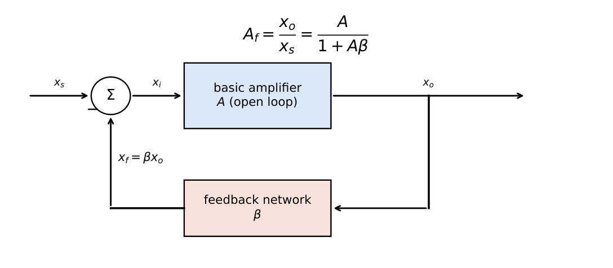
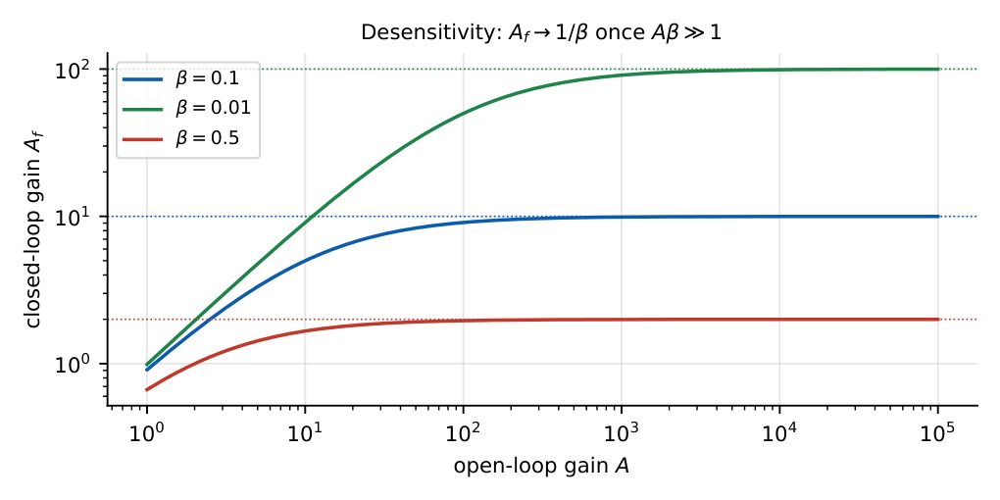
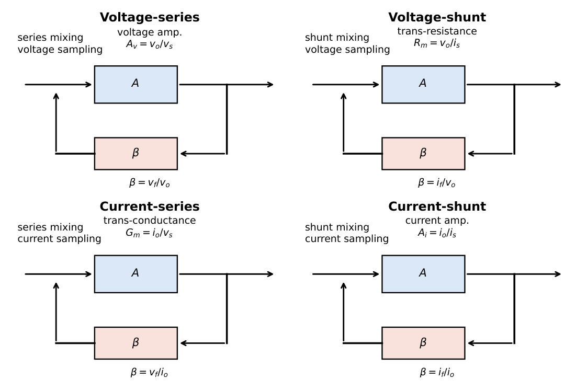
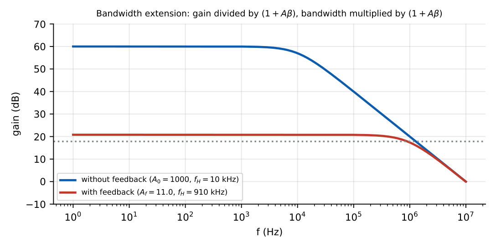
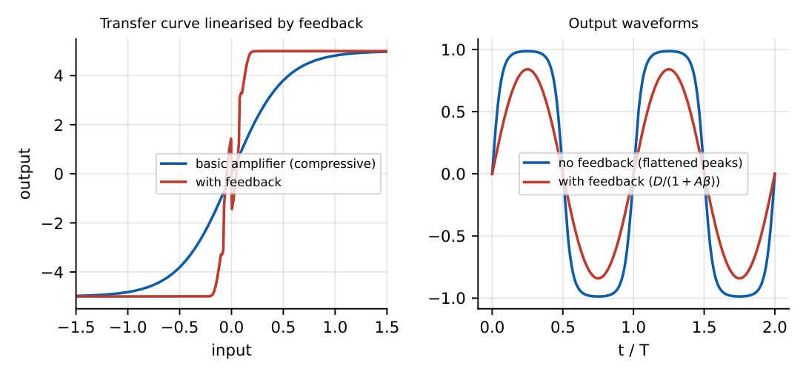

Feedback Amplifiers
In this chapter
- 25.1 Positive and negative feedback
- 25.2 Feedback topology
- 25.3 Voltage-series feedback
- 25.4 Voltage-shunt feedback
- 25.5 Current-series feedback
- 25.6 Current-shunt feedback
- 25.7 Gain with feedback
- 25.8 Desensitivity
- 25.9 Bandwidth improvement
- 25.10 Distortion reduction
- 25.11 Noise reduction
- 25.12 Input/output impedance changes
- 25.13 GATE problems
25.1 Positive and negative feedback
Feeding part of the output back to the input creates a loop. If the fed-back signal subtracts from the input (negative feedback), gain falls but many properties improve; if it adds (positive feedback), gain rises and the circuit may become an oscillator or a regenerative comparator.

\(A_f=\dfrac{x_o}{x_s}=\dfrac{A}{1+A\beta}\) (negative feedback), loop gain \(T=A\beta\), amount of feedback \(=1+A\beta\)
If \(A\beta\gg1\): \(A_f\approx\dfrac1\beta\) (set by passive components only).

25.2 Feedback topology
Two decisions define the four topologies:
- Sampling at the output: voltage sampling (feedback network in parallel with the output; \(v_o\) sampled, \(R_o\) decreases) or current sampling (in series with the load; \(i_o\) sampled, \(R_o\) increases).
- Mixing at the input: series mixing (voltages subtract; \(R_i\) increases) or shunt mixing (currents subtract; \(R_i\) decreases).

How to identify the topology. Sampling: set \(v_o=0\) (short the load). If the feedback signal disappears \(\Rightarrow\) voltage sampling; if it remains \(\Rightarrow\) current sampling. Mixing: at the input node, if the source and feedback voltages are in series with the amplifier input \(\Rightarrow\) series; if source and feedback currents join at a node \(\Rightarrow\) shunt.
25.3 Voltage-series feedback
Voltage amplifier (\(A_v=v_o/v_s\), \(\beta=v_f/v_o\)). Examples: non-inverting op-amp amplifier, emitter follower, two-stage CE with feedback divider.
\(A_{vf}=\dfrac{A_v}{1+A_v\beta}\), \(R_{if}=R_i(1+A_v\beta)\), \(R_{of}=\dfrac{R_o}{1+A_v\beta}\)
Op-amp non-inverting: \(A=10^4\), \(\beta=R_1/(R_1+R_f)=0.01\): \(A_f=10^4/101=99.0\); \(R_{if}=101R_i\); \(R_{of}=R_o/101\).
25.4 Voltage-shunt feedback
Transresistance amplifier (\(R_m=v_o/i_s\), \(\beta=i_f/v_o\) in siemens). Examples: inverting op-amp amplifier, collector-to-base BJT stage, photodiode transimpedance amplifier.
\(R_{mf}=\dfrac{R_m}{1+R_m\beta}\to\dfrac1\beta=R_f\), \(R_{if}=\dfrac{R_i}{1+R_m\beta}\), \(R_{of}=\dfrac{R_o}{1+R_m\beta}\)
\(R_m=100\) k\(\Omega\), \(\beta=1/R_f=1/10\,\mathrm{k}\Omega=0.1\) mS: \(R_m\beta=10\); \(R_{mf}=100/11=9.09\) k\(\Omega\) (\(\approx R_f\)). Input resistance falls by 11\(\times\): a good current-input circuit.
25.5 Current-series feedback
Transconductance amplifier (\(G_m=i_o/v_s\), \(\beta=v_f/i_o\) in ohms). Examples: CE with unbypassed emitter resistor, op-amp voltage-to-current converter.
\(G_{mf}=\dfrac{G_m}{1+G_m\beta}\to\dfrac1\beta\), \(R_{if}=R_i(1+G_m\beta)\), \(R_{of}=R_o(1+G_m\beta)\)
CE stage with \(R_E=1\) k\(\Omega\) unbypassed: \(\beta=R_E\), \(G_m=g_m=40\) mS: \(G_mR_E=40\); \(G_{mf}=40/41=0.976\) mS (\(\approx1/R_E\)); \(R_{of}=41r_o\). The collector current is set almost solely by \(R_E\).
25.6 Current-shunt feedback
Current amplifier (\(A_i=i_o/i_s\), \(\beta=i_f/i_o\)). Example: two-stage CE amplifier with a resistor from the output emitter back to the first base.
\(A_{if}=\dfrac{A_i}{1+A_i\beta}\to\dfrac1\beta\), \(R_{if}=\dfrac{R_i}{1+A_i\beta}\), \(R_{of}=R_o(1+A_i\beta)\)
| Topology | Voltage-series | Voltage-shunt | Current-series | Current-shunt |
|---|---|---|---|---|
| Stabilises | voltage gain | transresistance | transconductance | current gain |
| \(R_{in}\) | \(\uparrow\) | \(\downarrow\) | \(\uparrow\) | \(\downarrow\) |
| \(R_{out}\) | \(\downarrow\) | \(\downarrow\) | \(\uparrow\) | \(\uparrow\) |
| Ideal for | voltage amp. | I-to-V converter | V-to-I converter | current amp. |
25.7 Gain with feedback
Take the gain type appropriate to the topology. Notes for practical circuits: (1) Loading: the feedback network loads both input and output; the basic amplifier \(A\) must be computed including these loading effects (with \(R_s\), \(R_L\) and the feedback network’s input/output resistances). (2) \(\beta\) is the feedback network’s transfer function, for the appropriate quantities. (3) The sign of \(A\beta\) must be positive for negative feedback.
25.8 Desensitivity
Differentiating \(A_f=A/(1+A\beta)\): \[\frac{dA_f}{A_f}=\frac{1}{1+A\beta}\,\frac{dA}{A}.\] The fractional change in closed-loop gain is smaller than that of the basic amplifier by the factor \(1+A\beta\) (the desensitivity).
\(A=1000\), \(\beta=0.09\): \(A_f=1000/91=10.99\). If \(A\) drops by 20% (to 800): \(A_f=800/73=10.96\), a change of only \(0.27\%\) (first-order estimate \(20/91=0.22\%\)).
25.9 Bandwidth improvement
For a single-pole amplifier \(A(s)=A_0/(1+s/\omega_H)\): \[A_f(s)=\frac{A_0/(1+A_0\beta)}{1+s/\omega_H(1+A_0\beta)}\quad\Rightarrow\quad f_{Hf}=f_H(1+A_0\beta),\quad f_{Lf}=\frac{f_L}{1+A_0\beta},\quad A_f\,f_{Hf}=A_0f_H.\]

\(A_0=1000\), \(f_H=10\) kHz, \(\beta=0.09\): \(1+A_0\beta=91\), \(A_f=10.99\), \(f_{Hf}=910\) kHz.
25.10 Distortion reduction
Distortion (and other error signals generated inside the loop) is reduced by \((1+A\beta)\) when the input is increased to maintain the same output amplitude: \[D_f=\frac{D}{1+A\beta}.\]

\(D=10\%\), \(A\beta=99\): \(D_f=0.1\%\).
25.11 Noise reduction
Noise generated inside the loop (e.g. power-supply hum, later-stage noise) is also divided by \(1+A\beta\), provided the signal is restored to the same level by more input drive. Noise entering with the input signal is not reduced (SNR is unchanged): feedback does not improve the SNR of the source.
25.12 Input/output impedance changes
| Mixing | \(R_{if}\) | Sampling \(\to R_{of}\) |
|---|---|---|
| Series | \(R_i(1+A\beta)\) | Voltage: \(R_o/(1+A\beta)\) |
| Shunt | \(R_i/(1+A\beta)\) | Current: \(R_o(1+A\beta)\) |
Mnemonic: series and current tend to raise resistances; shunt and voltage tend to lower them.
25.13 GATE problems
Q1. \(A=100\), \(\beta=0.1\) (negative feedback). \(A_f=\) .
Q2. \(A=2000\), \(\beta=0.05\). If \(A\) changes by \(10\%\), \(A_f\) changes by approximately %.
Q3. The inverting op-amp amplifier employs (A) voltage-series (B) voltage-shunt (C) current-series (D) current-shunt feedback.
Q4. A voltage-series feedback amplifier has \(R_i=10\) k\(\Omega\) and \(A\beta=99\). \(R_{if}=\) M\(\Omega\).
Q5. A voltage-shunt amplifier has \(R_o=1\) k\(\Omega\), \(A\beta=9\). \(R_{of}=\) \(\Omega\).
Q6. \(f_H=20\) kHz, \(A=200\), \(\beta=0.05\). \(f_{Hf}=\) kHz and \(A_f=\) .
Q7. Current-series feedback (A) increases \(R_{in}\) and \(R_{out}\) (B) decreases both (C) increases \(R_{in}\), decreases \(R_{out}\) (D) decreases \(R_{in}\), increases \(R_{out}\).
Answers: Q1: \(100/11=9.09\). Q2: \(A\beta=100\); \(10/101\approx0.099\%\). Q3: (B). Q4: \(10\times100=1\) M\(\Omega\). Q5: \(1000/10=100\ \Omega\). Q6: \(A\beta=10\): \(f_{Hf}=20\times11=220\) kHz; \(A_f=200/11=18.2\). Q7: (A).
- Design \(\beta\) for \(A_f=20\) with \(A=10^4\) (voltage-series). [\(\beta\approx0.05\)]
- Find the distortion with feedback if \(D=5\%\), \(A\beta=49\). [0.1%]
- Which topology gives the most stable transconductance? [current-series]
- State two consequences of \(A\beta\gg1\). [\(A_f\approx1/\beta\); gain independent of the active device]